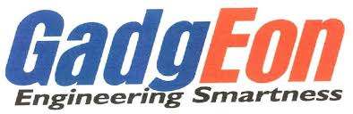

<div class="main">
    <!-- <div  class="header">
        <nav>
            
            <ul>
                <li><a href="">Home</a></li>
                <li><a href="">About</a></li>
                <li><a href="">Contact</a></li>
                <li><a href="">Service</a></li>
            </ul>
        </nav>
    </div>
    <div class="image">
       
    </div>
    <div class="content">
        
    </div> -->
    <div class="image">
        <div class="img1">
            <h3>Product Engineering</h3>
            
            <p>Our Product engineering services use hardware,embedded, software, and IT solutions for faster design, development, and launching of products.Today, lack of the right domain experience or technical expertise is not a barrier to building profitable products. Instead of relying on home grown talent and resources, which requires high investment in time and money, customers can leverage the expertise of product engineering service (PES) from Gadgeon.</p>

        </div>
           <div class="img1">
              <h3>IoT Engineering</h3>
               
               <p>Gadgeon provides end-to-end IoT engineering services from edge devices/sensors, cloud, to mobile/web applications. We serve enterprises, start-ups, and OEMs in connecting devices to IoT edge gateways communicating over different protocols. Gadgeon provides IoT software development and IoT software Services towards building Industrial as well as non-industrial IoT Solutions and services offered in different models such as SaaS, PaaS, etc. Our end-to-end solution testing, including test automation, makes sure that all the system components are tested and validated right from design to delivery stage.</p>
           </div>
        <div class="img1">
           <h3>Digitalization Services</h3>
            
            <p>A successful digitalization approach should be viewed more from a customer experience perspective than purely as a large process automation / IT modernization initiative. Digitalization is all about business simplification that helps to build self-sufficient business models for cost-effectiveness and consistent value. A successful digitalization initiative requires key ingredients like an aligned vision, prioritized goals, and a pragmatic digital-first approach for implementation with strong enablers and foundational elements.
            </p>
        </div>
        <div class="img1">
            <h3>Enterprise Applications</h3>
             
             <p>Many enterprises face challenges with complex application landscapes— a mix of legacy systems, digital, SaaS and many more. These applications consume a large share of their IT resources and restrict their ability to drive digital growth. Our technology-driven approach to application services will enable enterprises to reinvent their application portfolio. They could use emerging technologies, building with speed and agility to meet todays and future business needs.
             </p>
         </div>
    </div>
    </div>
